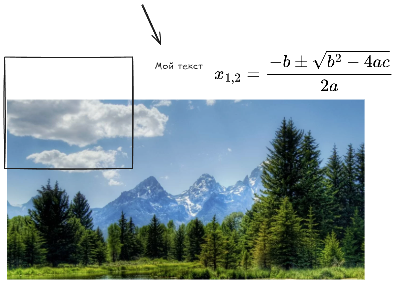

Тест возможностей obsidain
Базовые возможности
список
список
список
список
список
список
Текст с кодом print(python) и математикой в виде LaTex \(x_{1,2}=12\)
\[x_{1,2}=\frac{-b\pm\sqrt{\color{Red}b^2-4ac}}{2a}\]
Код на Python:
print('Hello, world')
Картинка:
Внутренняя ссылка (ссылка).
ExaliDraw
[ ] локальный

[ ] онлайн
Mermaid диаграммы
Пример ссылки
graph TD;
A-->B;
A-->C;
B-->D;
C-->D;
sequenceDiagram
participant Alice
participant Bob
Alice->>John: Hello John, how are you?
loop HealthCheck
John->>John: Fight against hypochondria
end
Note right of John: Rational thoughts <br/>prevail!
John-->>Alice: Great!
John->>Bob: How about you?
Bob-->>John: Jolly good!
quadrantChart
title Reach and engagement of campaigns
x-axis Low Reach --> High Reach
y-axis Low Engagement --> High Engagement
quadrant-1 We should expand
quadrant-2 Need to promote
quadrant-3 Re-evaluate
quadrant-4 May be improved
Campaign A: [0.3, 0.6]
Campaign B: [0.45, 0.23]
Campaign C: [0.57, 0.69]
Campaign D: [0.78, 0.34]
Campaign E: [0.40, 0.34]
Campaign F: [0.35, 0.78]